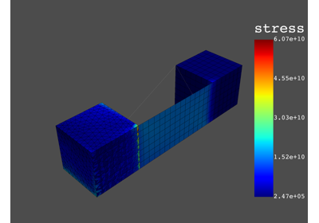
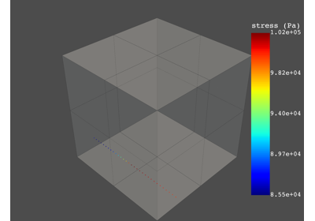

PyDPF-Post legacy examples#
These examples show how you use the legacy PyDPF-Post API.



Static analysis



Request result on a specific path
Request result on a specific path
These examples show how you use the legacy PyDPF-Post API.
Request result on a specific path